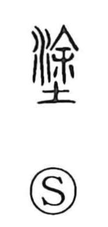

塗

Uncategorized
Kun: nuru | On: to
to paint ・ to smear ・ mud ・ road
Explanation
A phono-semantic graph whose original form is 涂, with 余 as the phonetic indicating the on reading to; in the later form 塗, the earth element underscores the sense of mud and plaster. In Mencius’ phrase 坐於塗炭, 塗 is glossed as 泥, “mud.” From the core act of spreading wet material, the character came to mean to paint or plaster, and by extension also the road or way, as in 塗説. Plastering over—塗りこめる—was practiced as a ritual sealing to ward off malign forces, and 塗殯 refers to coating the coffin with mud during the period of lying in state before burial. The character thus gathers the ideas of coating, mud, and the paths formed or muddied by it.